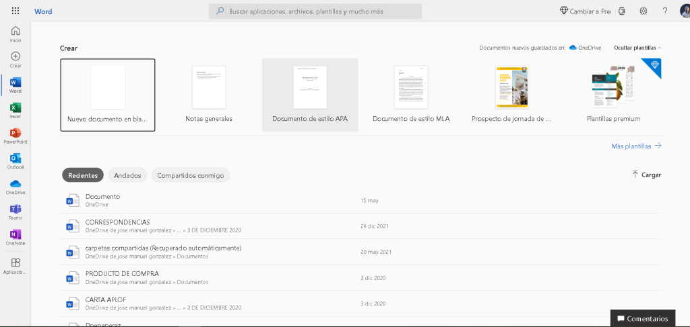
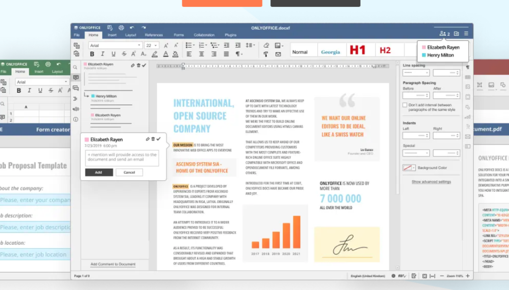

Aplicaciones ofimaticas
¿Qué es una aplicación ofimática ?
Una aplicación de ofimática es un conjunto de programas destinados a trabajo de oficina para poder hacer tablas en el ordenador , escribir archivos de texto , presentaciones y mas hay varios tipos pero la mas usada o mas popular es Office365
¿Qué diferencias encuentras entre las aplicaciones de ofimática web y sus versiones de escritorio en general?
Las diferencias son que las de escritorio son instaladas en tu ordenador y lo que guardas se queda en tu pc suelen ser de paga pero hay opciones gratuitas como Libreoffice en su ultima versión 7.4 es una muy buena opción ofrece muchas herramientas para crear tus documentos y archivos tablas Las aplicaciones de ofimática web suelen tener la ventaja de el auto guardado y tener siempre disponible en cualquier dispositivo los documentos además de que ofrece un montón de plantilla preestablecidas una muy famosa es Google Docs y lo mejor de todo es gratis Dentro de las aplicaciones de ofimática web podemos encontrar la Suite de Google, ¿Qué tipo de aplicaciones podemos encontrar en esa Suite?
Podemos encontrar estos programas :
- Documentos
- Hojas de calculo
- Presentaciones
Además de una interfaz muy bonita e Intuitiva ✔✔🙌.
Busca otras suites de ofimática web y describe sus principales funcionalidades y las posibles diferencias con la Suite de Google. (Al menos 2 suites más).
Otra suite de ofimática pueden ser :
- Microsoft office 365
- onlyoffice
- WPSoffice
Microsoft office 365 es una de la suite de ofimática mas usadas con una interfaz muy intuitiva y además gratuita a diferencia de su versión de escritorio posee gran cantidad de herramienta y además es el que se suele usar en gran parte de las empresas.

OnlyOffice es una suite de pago . La licencian Enterprise edición de por vida cuesta 1020€ ofrece gran cantidad de herramientas Editores en línea para documentos de texto, hojas de cálculo, presentaciones y formularios
